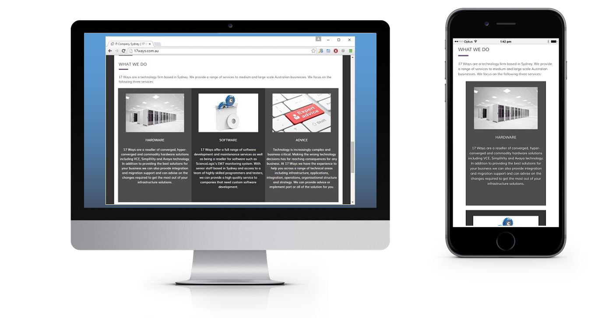

More than 30,000 new applications are added to the Apple Store every month and there are 1.5m apps available as of July 2015. The Google Play store has even more with 1.6m apps. Social media is now 60% attributed to mobile and tablet platforms and even conservative estimates suggest that 30% of all web traffic originates from mobile devices. Some estimates put it over 60%.
As we will see below it is now quite easy to develop an app and push it to an online store, so how many of these are 'real' applications and how many are 'Hello World' apps is another question. Nonetheless it is undeniably important for most organisations to be able to push their content to mobile devices.
Interestingly Google now assesses websites based upon how they perform and render on smartphones and will downgrade a site in its rankings if it isn't built properly for smaller screens. This means that even if you are only targeting desktop and laptop users with your site, they won't be able to find you unless the site works on a smartphone.
Before you go all the way into building an app, ask yourself what it is that you are trying to achieve.
Remember, even if you have an app, that doesn't mean people will want to use it. If your app has exactly the same information as your website then people are much more likely to visit your website than to download and install yet another app on their already crowded smartphone screen. You need a compelling reason for people to use your app or you are wasting time and money on building one.
The UN estimates that more people have access to mobile phones than toilets. Getting the right message about your product out there is extremely important.
Here are a few common mistakes and alternatives that you should consider first:
Mobile app users have the attention of a goldfish. If you develop an app it needs to be compelling.
Consider for example that you run a bar and decide that an app with some information about your bar and a price list with opening times would be a nice thing to have. Think how quickly that app will go stale compared to an app that uses geolocation to recognise that you are near the bar and gives you directions, has the ability to advertise specials, has a clickable menu to order drinks or food and a built-in loyalty program that gives you a free drink every 5 visits.
So you have decided that social media isn't enough for you and you want to get your content to mobile devices. How can you do it?
You almost certainly have a website already if you are considering building an app. Why not extend the functionality of the website to do what your app will do? Hopefully you have built your website in a technology that is 'responsive' (i.e. adapts to the size of the screen that it is being shown on). Most content management systems like WordPress use responsive technologies. Alternatively if you build the site yourself you can use a framework like bootstrap to ensure that your site looks good on a desktop or mobile screen. This site is built using bootstrap as you can see in the screenshots below.

| Pros | Cons |
|---|---|
| Easy to develop if you already have a website. | Not as obviously aimed at mobile users as an app. |
| Not intrusive. | Not as responsive and immediate as an app. |
| Works for non-mobile too. | Not suitable for fullscale applications. |
| No updates to worry about. | Won't work offline. |
| No additional development tools and licences needed. |
There are dozens of websites that you can use to generate a fully functional app for iPhone or Android with a few clicks of your mouse.
Some of the better ones include Como, Appsbar and AppMakr.
This is the sort of thing that you can knock up in only a few minutes. This example is from Como.
The problem with these tools though is that you really can't do much more than just put together basic features. They are good for contact information and simple forms but they are not suitable for building more advanced applications. As mentioned above, if you are going to keep your customers using your app, you will need to give them more than just photos of your cat looking cute.
| Pros | Cons |
|---|---|
| Very Easy to build. | Not suitable for real applications. |
| Integrates with social media. | |
| Deployment is taken care of for you. | |
| No development skills required. |
Roll up your sleeves, get a bucket of coffee and stack your top pocket with pens. Its time to do some real development.
You will need to do some actual programming for this and set yourself up with a proper development environment. The good news however is that the tools are very advanced and there are tons of resources on the internet to help you get started.
Apple's choice of development language is Objective-C. It's not so much a language as a series of grunts.
For iPhone and iPad development you will need a Mac. It is the only platform supported. You'll also need to download XCode which is massive, and sign up to Apple's developer program which is $100 per year. That is a lot if you only want to play with it but a real bargain for serious developers given everything that it will give you access to. The less said about Objective-C the better. It is an awful language but you really don't have any alternative. There are a few tools that can generate code for you from higher level languages but they aren't mainstream options. If you want to go down this path then take a look at PyObjC which provides a bridge from Python to Objective-C. You will still need to learn a fair bit of Objective-C in order to make it work, and it does drag Python down towards the level of Objective-C, but it is a slight improvement. Apple recognise the problems with trying to develop apps in Objective-C and have introduced a new language, Swift, however adoption is slow and you will find it harder to get developers with Swift skills. It is also possible that Swift will fail and end up being unsupported while with the huge volume of apps out there, it is hard to see that happening to Objective-C.
In case you think I am being a bit unfair to Objective-C, have a look at this code which is the top answer on stackoverflow for the question "How do I reverse an array in Objective-C?"
@implementation NSArray (Reverse)
- (NSArray *)reversedArray {
NSMutableArray *array = [NSMutableArray arrayWithCapacity:[self count]];
NSEnumerator *enumerator = [self reverseObjectEnumerator];
for (id element in enumerator) {
[array addObject:element];
}
return array;
}
@end
@implementation NSMutableArray (Reverse)
- (void)reverse {
if ([self count] <= 1)
return;
NSUInteger i = 0;
NSUInteger j = [self count] - 1;
while (i < j) {
[self exchangeObjectAtIndex:i
withObjectAtIndex:j];
i++;
j--;
}
}
@end
Yup, that gibberish does the same thing as this bit of Python:
a=[4,6,5,1,8,3] a.reverse()
Objective-C is only one part of the puzzle though, you will also have to learn Cocoa which is the API into the Apple world. If you like history you will find that a lot of the Cocoa API has calls with NS in the name, like NSEnumerator and NSUInteger above. The NS stands for NeXTSTEP which was the operating system that Steve Jobs developed when he left Apple in 1985 and formed NeXT. Apple bought the company and Jobs with it in 1997 and replaced their dated operating system with the nice stuff they got from NeXT. Back in the 80s having to allocate and free up your own memory was all the rage, as were scary perms and pogo sticks, but unfortunately we've ended up keeping the wrong one out of those three.
If you decide to develop for Android then it is slightly easier as you can develop in Java. You will need to learn and use the Android SDK but again the tools are quite advanced. You also aren't restricted to developing on a Mac and you don't need to pay anything to get started.
If you think its still the 90s you can build an app for Blackberry using Java and their SDK as well. There is also probably an SDK for Windows Phone apps but frankly it wouldn't make much difference if there wasn't. My brother is the only person I've ever heard of who uses a Windows Phone and I think he got it free.
Whatever platform you develop for, none of your code or skills will be transferable to any other platform.